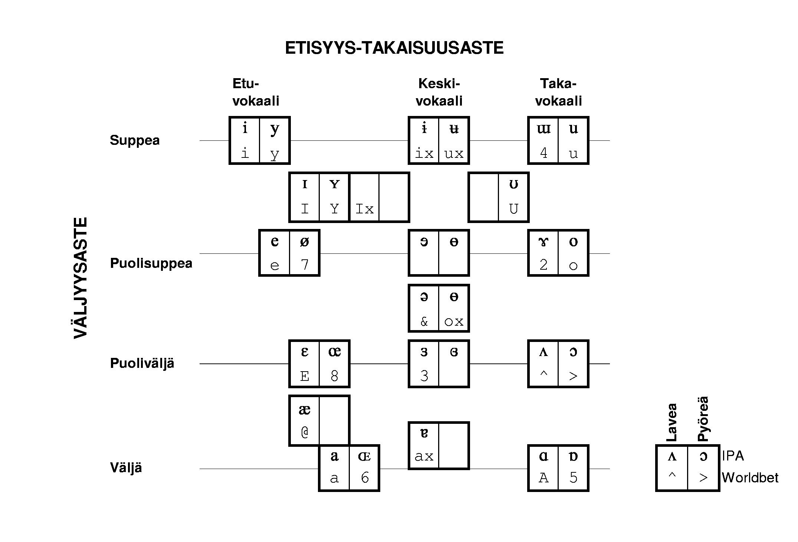
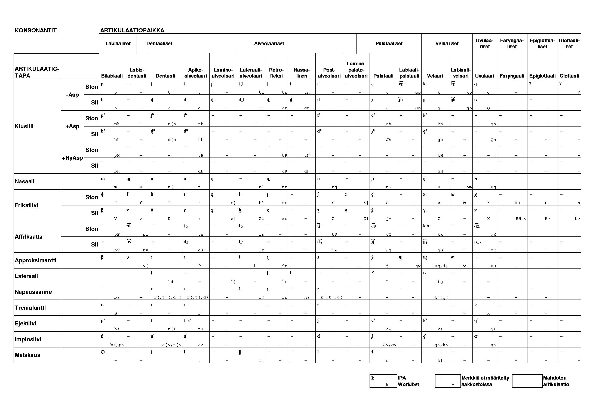
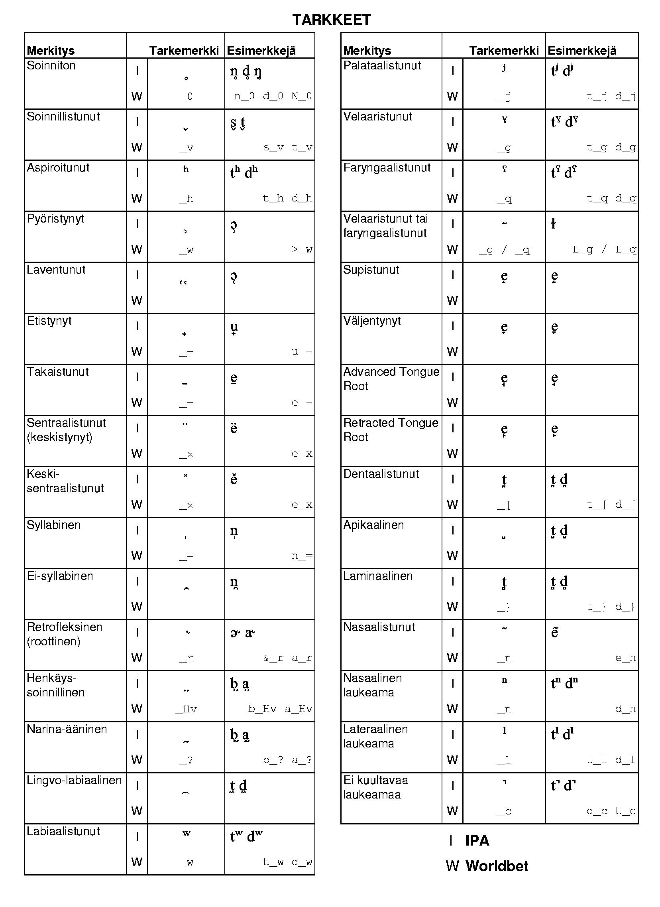

Aliluvut
A.1 Worldbet-symbolit
Kuva A.1:
Vokaalimerkit IPA-aakkoston (kunkin laatikon yläreuna) ja sitä vastaavan
ASCII-muotoisen Worldbet-aakkoston (alareuna) mukaan.
|

|
Kuva A.2:
Konsonanttimerkit IPA-aakkoston (kunkin ruudun vasen yläkulma) ja
sitä vastaavan ASCII-muotoisen Worldbet-aakkoston (oikea alakulma)
mukaan.
|

|
Kuva A.3:
Tarkemerkit eli diakriitit
IPA-aakkoston (kunkin ruudun vasen yläkulma) ja sitä vastaavan ASCII-muotoisen
Worldbet-aakkoston (oikea alakulma) mukaan. Tarkemerkeillä kuvataan
tietyn äänteen lisäpiirteitä.
|

|
Mietta Lennes
2005-05-11